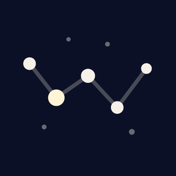
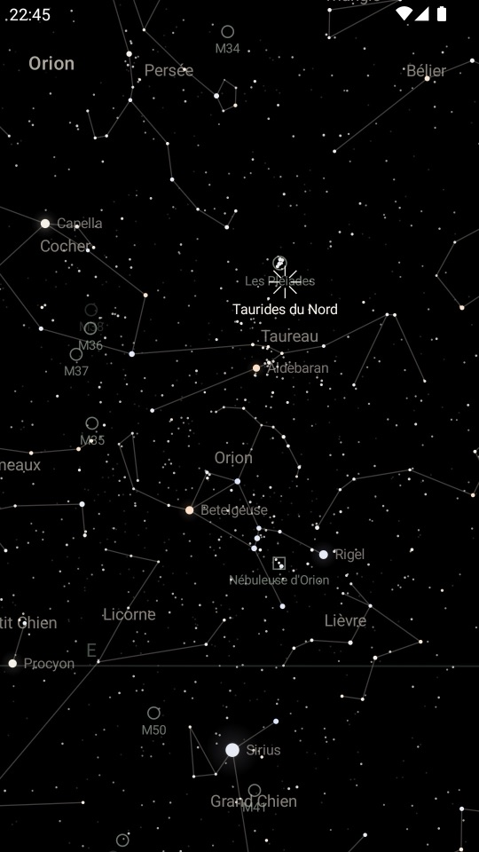

Céleste
Levez le téléphone vers le ciel : les constellations, les planètes et la Lune se dessinent par-dessus la caméra, à leur place réelle.
Télécharger CélestePour Android 8 ou plus récent
Sur un ordinateur ? Scannez ce code avec le téléphone Android.
Installer
- Touchez Télécharger Céleste. Si le navigateur prévient que ce type de fichier peut être nuisible, choisissez Télécharger quand même : Céleste n'est pas dans le Play Store, d'où l'avertissement.
- Ouvrez le fichier téléchargé. La première fois, Android demande d'autoriser l'installation depuis le navigateur : Paramètres, activez l'autorisation, puis revenez.
- Touchez Installer. Google Play Protect peut proposer d'analyser l'application : acceptez, cela prend quelques secondes.
Ensuite, Céleste se tient à jour d'elle-même : quand une nouvelle version paraît, elle la propose, vérifie qu'elle vient bien de son auteur, et rien ne s'installe sans votre accord.

Ce qu'on y fait
- Identifier
- Visez une étoile : Céleste dit ce que vous regardez. Les 88 constellations, les planètes, le Soleil, la Lune et les étoiles filantes.
- Apprendre
- Touchez une constellation pour sa fiche : mythologie, étoiles principales, saison d'observation. Les 110 objets de Messier ont aussi la leur.
- Retrouver
- Cherchez « Cassiopée » ou « M31 » : une flèche guide le téléphone jusqu'à la cible.
- Jouer
- Le jeu de piste donne une constellation à trouver dans le vrai ciel.